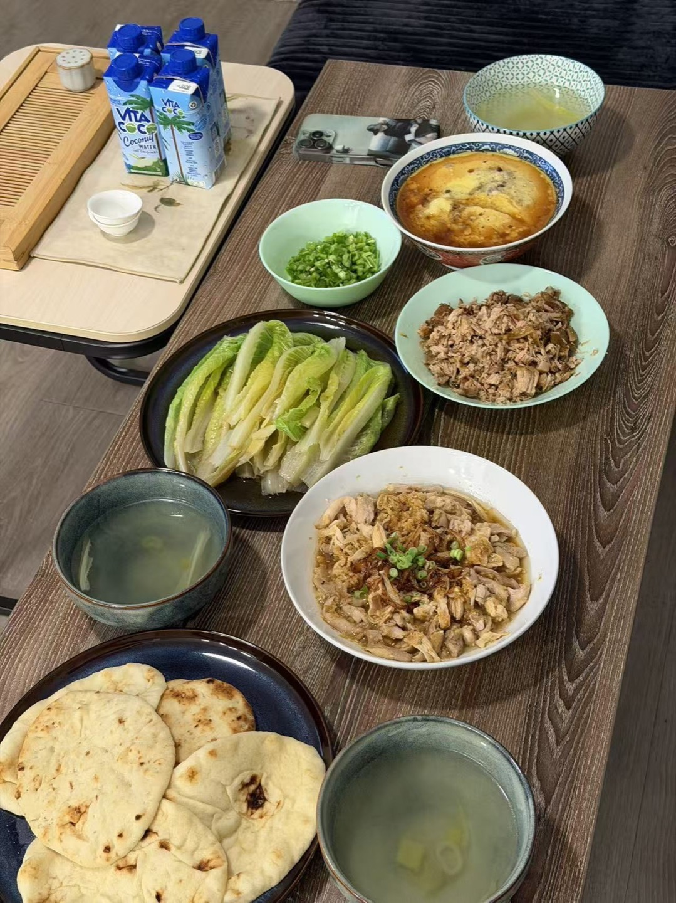
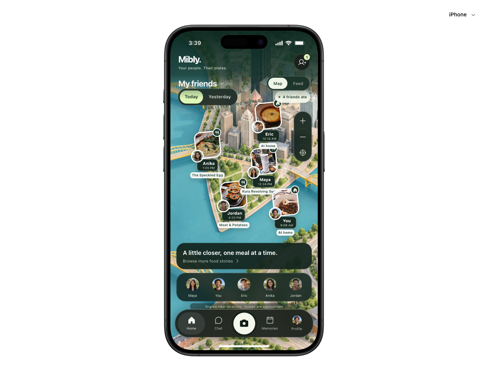
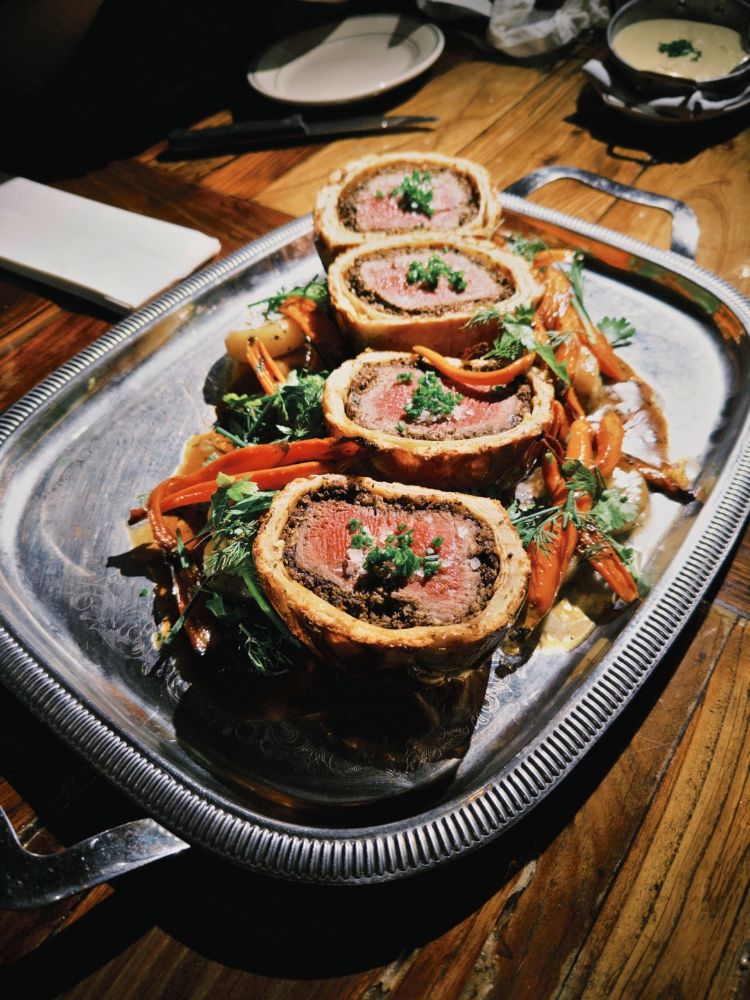
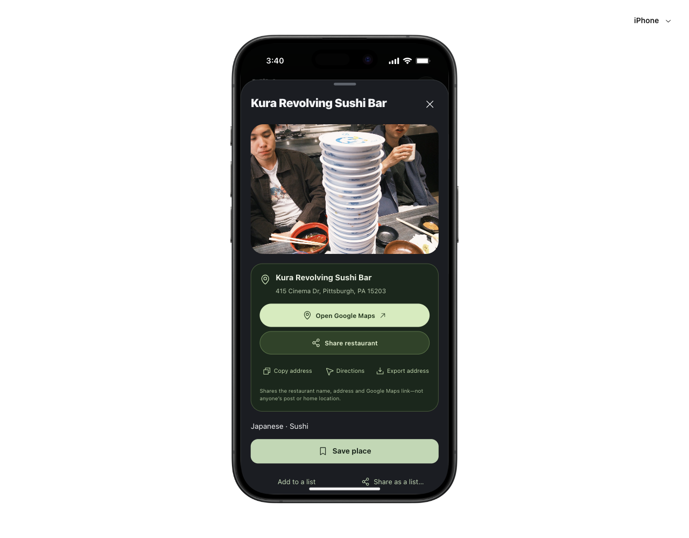
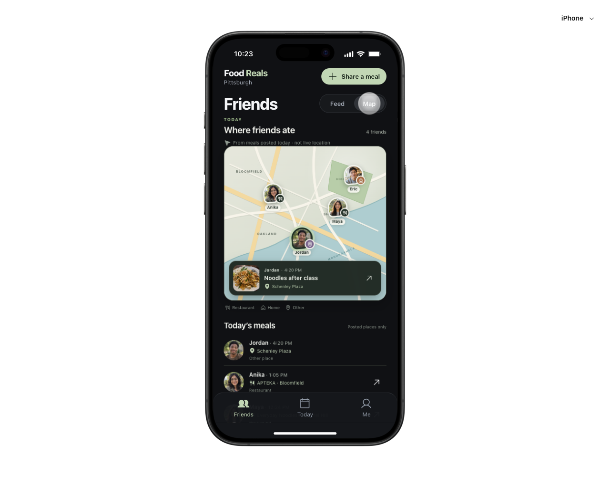

“Keep track of
restaurants.”
Lists, maps, recommendations, and friends’ restaurant activity.
Beli’s published capabilities ↗A little closer, one meal at a time
A map-first way to catch up through food.
At a restaurant, at home, or somewhere in between.



See who ate what, where, and when—without opening every post.
Explore the working prototype01 / The opportunity
I started with a simple question: where did my friends eat today? A restaurant list only tells part of that story. I wanted homemade dinners and quick lunches to have a place, too.
Lists, maps, recommendations, and friends’ restaurant activity.
Beli’s published capabilities ↗A friend, a plate, a time, and a shared place—including home cooking.
See the design decisions ↓Beli already has maps and social features. The proposed difference is an everyday, map-first social habit—not the presence of a map. That habit remains a design hypothesis.
02 / Discover
I used AI to organize a selected sample of Beli reviews. Two themes helped me look beyond choosing the next restaurant: staying connected and keeping a personal food history.
125 App Store + 125 Google Play
25 reviews per star rating, per platform.
Collected October 2, 2026.
Friends’ activity and food sharing were part of the appeal.
Personal history mattered alongside discovery.
Overlapping themes in the selected 250 reviews—not estimates of how all users feel.
This was a deliberately star-balanced sample, not a representative survey. One AI analyst coded the complete review text with overlapping themes. There was no independent intercoder validation. Historical reviewer reports do not establish current product behavior.
Five AI-simulated interviews explored possible situations; they were not interviews with real participants. The evidence helped frame the opportunity, not validate demand for Mibly.
03 / Define · The question I chose
How might everyday meals help
friends feel a little closer?
AI helped compare patterns and possible framings. I chose to move beyond restaurant utility and center the ordinary social moment.
04 / Develop · Choose a direction
I explored restaurant-, feed-, and map-led ways into the product. The map-first direction made a friend’s everyday meal—not a ranked venue—the main unit of the experience.
The first version treated the map as a secondary tool. I moved friends’ food photos onto Home, with avatars, timestamps, and declared places visible together.
A Zenly-inspired illustrated world gives the experience personality. A Feed toggle keeps longer browsing familiar.
Explore the map ↗My BeReal references helped clarify the surrounding structure: Home, Chat, Capture, Memories, and Profile. Mibly’s map stays distinctive; the navigation feels familiar.
Home’s people center handles discovery and requests. Friends of friends is an explicit scope, with mutual-friend context and opted-in restaurant posts.
Find your people ↗A meal leads to a restaurant card. Copy its address, share the venue, or open Google Maps without digging through a conversation.
Sharing a place carries the restaurant name, address, and map link—not someone’s private post.
Try restaurant sharing ↗
Sample restaurant record. The branch does not establish where the original photo was taken.
05 / Develop · Inspect, critique, revise
Each working prototype made a different problem visible. I used those moments to sharpen the design, not just polish its appearance.
The early feed and contained map still felt like restaurant tools. Putting the meal pins directly on Home answered my central question at a glance.

I replaced generated food imagery with my photos: home cooking, sushi, brunch, and shared dinners. The same pin component could now tell a more specific meal story.
Actual saved prototype screenshots, with cropped UI details. Older screens retain the Food Reals name. Visual provenance ↗
06 / A product principle
A social map can imply more than someone intended. I made the boundaries part of the core flow.
No home address or directions. A missing location gets no spatial pin.
Friends of friends see eligible restaurant posts—not home or private meals.
Its time and place describe a shared meal, not where a person is right now.
07 / Deliver · Prototype and test
I built the core journey as an interactive prototype, then checked navigation, audience rules, and sharing fallbacks. Choose a feature or explore the phone directly.
Ready when you are.
Start with the map, or pick any feature above.
No sign-in. Demo changes are temporary.
Real accounts and message delivery are not connected.
Meal photos are mine. Names, timestamps, and visits are prototype scenarios.
A separate process reflection
The useful loop was never one perfect prompt. It was evidence, a working version, a specific critique, and another version I could inspect. I documented what I tried, where AI helped, and where it could not replace design judgment or real people.
Read the AI process reflection ↗08 / Deliver · Evaluate and learn
The prototype is functionally checked. The daily habit is still unproven. My next step is to put it in front of a real friend group.
Can people distinguish a shared meal location from someone’s current position?
Is posting an everyday meal easy enough, and is the audience choice clear?
Do friends return for ordinary meals, beyond the novelty of the first visit?
Planned participant evaluation. No adoption, retention, or usability improvement has been measured.